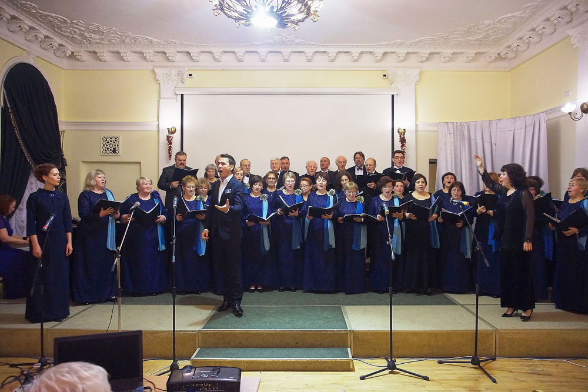

Народный коллектив камерный хор «Сергиев Посад»
Народный коллектив камерный хор «Сергиев Посад» – хормейстер Макарова Наталья Валерьевна – замечательный педагог по вокалу, хормейстер, удивительный творческий человек, закончила Академию музыки имени Гнесиных. Хор «Сергиев Посад» самый молодой и самый многочисленный хоровой коллектив Дворца культуры. Несмотря на свой юный возраст, коллектив уже имеет звание «Народный». Хор «Сергиев Посад» постоянный участник всех мероприятий, проводимых Дворцом культуры. Большая творческая дружба связывает хор с библиотеками и другими организациями города. Проведено множество авторских программ – «Свет Рождества», «Музыка под снегом», «Строки опаленные войной» и мн. др.
Коллектив старается находить новые формы концертов, лекториев, сольных выступлений. Силами этого замечательного коллектива за все время их существования было проведено большое количество концертов на различных площадках, как нашего города, так и за его пределами.
У хора есть опыт проведения благотворительных выступлений. В 2009 г. в рамках акции «Помоги ребенку» был проведен благотворительный концерт «Свет надежды» все средства от которого, перечислены на лечение детей больных лейкемией.
Репертуар коллектива разнообразен: от духовных произведений до обработок русских народных песен. В исполнении хора много произведений русских и зарубежных классиков, современных композиторов.
Коллектив за время своей работы успел побывать во многих странах: Германия, Франция, Голландия, Люксембург, Италия, а так же посетил святую землю Израиля Иерусалим. И всегда их принимали с теплотой и восторженными аплодисментами.
Участники коллектива люди различных профессий и возрастов. Они приходят сюда не только петь, но и пообщаться, находить новых друзей, поддерживать друг друга и в горе и в радости. Это настоящая большая любящая семья.